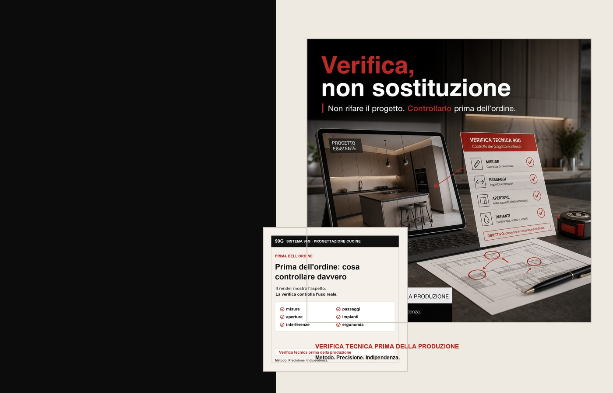
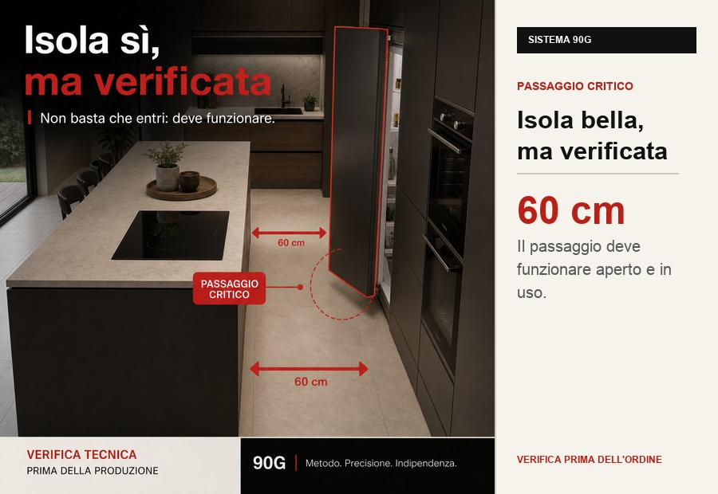
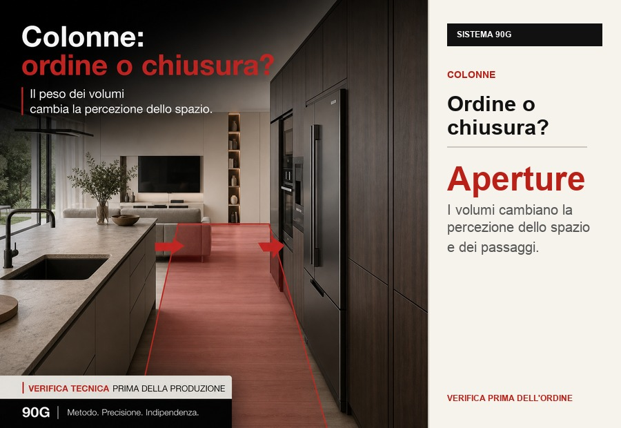
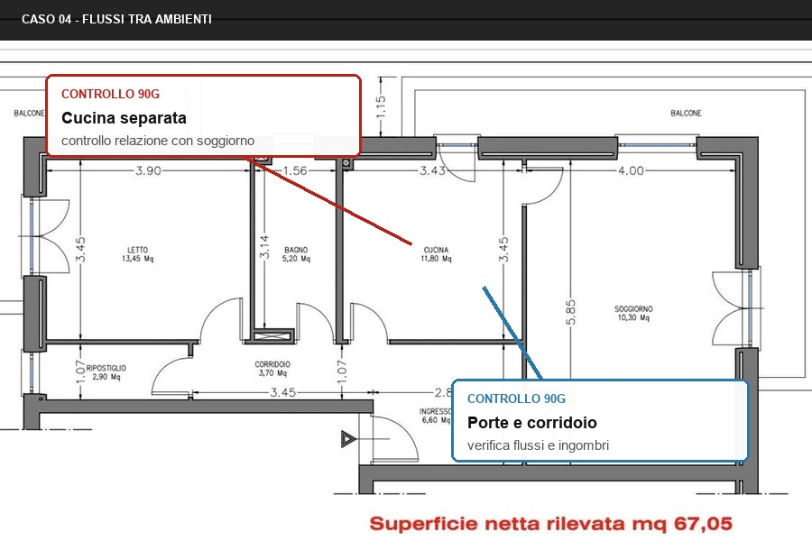

Passaggi troppo stretti
Quando colonne, isola e aperture si avvicinano, pochi centimetri possono trasformare un percorso in un punto congestionato.

Audit tecnico indipendente
Prima di ordinare, controlliamo misure, passaggi, aperture, impianti ed ergonomia per individuare errori che nel render spesso non si vedono.
Prima dell'ordine
Il problema è evitare errori reali nell'uso quotidiano: ante che si bloccano, passaggi ridotti, lavastoviglie che invade il percorso, prese nel punto sbagliato o elettrodomestici che interferiscono tra loro.
Criticità invisibili
Quando colonne, isola e aperture si avvicinano, pochi centimetri possono trasformare un percorso in un punto congestionato.
Frigo, forno, lavastoviglie, cassetti e sportelli devono essere verificati aperti, non solo chiusi nel disegno.
Prese, scarichi e attacchi possono sembrare dettagli, ma se cadono nel punto sbagliato generano costi e modifiche in cantiere.
Casi tecnici
Questi esempi aiutano a capire dove un progetto può sembrare corretto nel render, ma diventare scomodo o costoso quando la cucina viene installata e usata.

01Il controllo evidenzia se porte, percorsi e zona operativa della cucina interferiscono con il movimento reale delle persone.
 02
02
La verifica legge il progetto nel suo insieme: ingresso, cucina, zona giorno, camere e percorsi principali devono funzionare senza strozzature.

03Nei progetti piccoli pochi centimetri cambiano tutto: basi, cottura, lavello, porte e arredi devono essere verificati mentre vengono usati.

04Porte, corridoi e connessioni tra ambienti incidono sull'uso quotidiano quanto la composizione della cucina stessa.
Esempi dimostrativi ricavati da planimetrie reali, rielaborate e anonimizzate per mostrare il tipo di controllo eseguito.
Esempio reale di controllo
La verifica 90G osserva passaggi, aperture, persone in movimento, zone operative e accessi principali prima che la cucina venga ordinata.
Protocollo 90G

Output
Il report evidenzia criticità, interferenze e osservazioni operative prima che la cucina venga ordinata o prodotta.
Quando usarlo
Hai una piantina o un preventivo e vuoi un controllo prima della conferma.
Stai valutando una cucina con isola, colonne, passaggi stretti o molti elettrodomestici.
Vuoi un parere tecnico indipendente, non un secondo preventivo commerciale.
Materiale utile
Più il materiale è completo, più il controllo può individuare criticità pratiche prima che il progetto venga confermato.
Piantina, render, schema cucina o PDF del progetto.
Controllo di misure, passaggi, aperture, impianti e uso reale.
Ricevi un documento chiaro con criticità e osservazioni operative.
Domande frequenti
Prima di confermare l'ordine, quando hai già una piantina, un render o un preventivo della cucina.
No. Sistema 90G è una verifica tecnica indipendente del progetto, non un secondo preventivo commerciale.
Il report viene preparato entro 48 ore dalla ricezione del materiale completo.
Passaggi, aperture, interferenze, ergonomia, impianti, flussi di movimento e uso reale della cucina.
Prezzi
Prezzi chiari per capire subito quanto investire prima di confermare una cucina che può costare migliaia di euro.
Verifica Base
Per progetti semplici o per un primo controllo mirato.
Consigliato
Audit tecnico completo sul progetto cucina prima dell'ordine.
Progetto + Preventivo
Per chi vuole controllare anche coerenza e chiarezza del preventivo cucina.
I prezzi si riferiscono alla verifica tecnica del materiale inviato. Progetti molto incompleti o particolarmente complessi possono richiedere una valutazione dedicata. Seconda revisione dopo modifiche: +49 €.
La verifica non sostituisce progettista, rilievo tecnico o controlli di cantiere. Serve a individuare criticità pratiche e incoerenze funzionali prima dell'ordine della cucina.
Verifica prima di ordinare
Invia la piantina o il PDF del progetto. Ti diciamo cosa va controllato prima della produzione.
Invia il progetto su WhatsApp